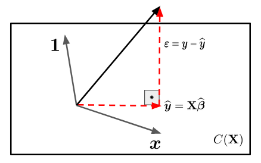

Linear Algebra and Least Squares Estimators
Introduction
In several practical situations we faced with problem where exist a variable \((X)\) more easy to be measured and/or controlled and the goal is to predict other variable \((Y)\), which it is more difficult to be measured and/or controlled.
The simple linear regression model is the natural choice to describe the relationship between two variable and, then get predictions of \(Y\) based on the determined relationship.
In this model, we assumed that the explanatory variable, \(X\), is fixed, i. e., there is no random mechanism that generates the observed values \(x_i\). In practice, we observed the pairs \((y_1, x_1), (y_2,x_2), \ldots, (y_n,x_n)\), so that the relationship between the variables is expressed by
\[y_i = \beta_0 + \beta_1\,x_i + \varepsilon_i, \qquad i = 1,2, \ldots, n\] where \(\beta_0\) and \(\beta_1\) are unknown constants (parameters) and \(\varepsilon_i\) is the random error term that we can not control during the experiment.
Linear Algebra
Note that the response variable \((Y)\) is written as linear combination of explanatory variable \((X)\) plus and random error term \((\varepsilon_i)\). In matrix notation the model is given by \[\textbf{y} = \textbf{X}\,\boldsymbol{\beta} + \boldsymbol{\varepsilon}\] where
\(\textbf{y} = (y_1, \ldots, y_n)^\top\);
\(\textbf{X} = (\textbf{1} \vert \boldsymbol{x})\) is the \(n\times 2\) matrix, where \(\textbf{1}\) is a column vector of ones and \(\boldsymbol{x} = (x_1, \ldots, x_n)^\top\);
\(\boldsymbol{\beta} = (\beta_0, \beta_1)^\top\);
\(\boldsymbol{\varepsilon} = (\varepsilon_1, \ldots, \varepsilon_n)^\top\).
The random error component, \(\boldsymbol{\varepsilon}\), indicates that \(\textbf{y}\) does not have a deterministic relationship with \(\textbf{X}\). In other words, the vector \(\textbf{y}\) is not in the same vector space generated by the columns of matrix \(\textbf{X}\). Such space will be denote by \(C(\textbf{X})\).
Hence, the goal is find a vector, \(\widehat{\boldsymbol{\beta}} = (\widehat{\beta}_0, \widehat{\beta}_1)^\top\), that projects the \(\textbf{y}\) into \(\textbf{X}\). There are infinitely many such vectors. However, there is just one vector, \(\widehat{\boldsymbol{\beta}}\), where the distance between \(\textbf{y}\) to the vector space \(C(\textbf{X})\) is minimum. This vector is the orthogonal projection of \(\textbf{y}\) into \(C(\textbf{X})\). Let’s suppose \(n = 3\), then \(\textbf{X}\) is a vector subspace of \(\mathbb{R}^3\) and we have the following representation

We know that \(\boldsymbol{\varepsilon}\) is perpendicular to \(\textbf{X}\), then the inner product between \(\boldsymbol{\varepsilon}\) and \(\textbf{X}\) is \(0\). That is,
\[ X\cdot \boldsymbol{\varepsilon} = 0. \]
We also know that
\[\boldsymbol{\varepsilon} = \textbf{y} - \widehat{\textbf{y}} = \textbf{y} - \textbf{X}\,\widehat{\beta}.\]
Thus,
\[\textbf{X}\cdot \boldsymbol{\varepsilon} = \textbf{X}\cdot (\textbf{y} - \textbf{X}\,\widehat{\boldsymbol{\beta}}) = \textbf{X}^\top\,(\textbf{y} - \textbf{X}\,\widehat{\boldsymbol{\beta}})\]
\[\textbf{X}^\top\,\textbf{X}\,\widehat{\boldsymbol{\beta}} = \textbf{X}^\top\,\textbf{y} \qquad (\text{normal equations})\]
At this point, we should note that there will only be a solution if:
\(\textbf{X}^\top\,\textbf{X}\) is full rank;
which implies that the columns of \(\textbf{X}\) should be linearly independent.
Note that the matrix \(\textbf{X}\) is composed by the vectors \(\mathbf{1}\) e \(\boldsymbol{x}\). The vector \(\boldsymbol{x}\) will only be linear combination of \(\mathbf{1}\) if all observed values of \(\boldsymbol{x}\) are the same, which in practice does not make sense.
Therefore, the normal equations solutions is given by \[\widehat{\boldsymbol{\beta}} = (\textbf{X}^\top\,\textbf{X})^{-1}\,\textbf{X}^\top\,\textbf{y},\]
which is known as least squares estimators.
Conclusions
We have seen that the least squares estimators can be obtained using algebra linear tools, without distribution assumptions for the random error term. However, to study the behavior of least squares estimators, hence make inference about the parameters and predictions of new observations it will be necessary to impose assumptions regarding the probability distribution of \(\boldsymbol{\varepsilon}\). At this point that statistic appears!